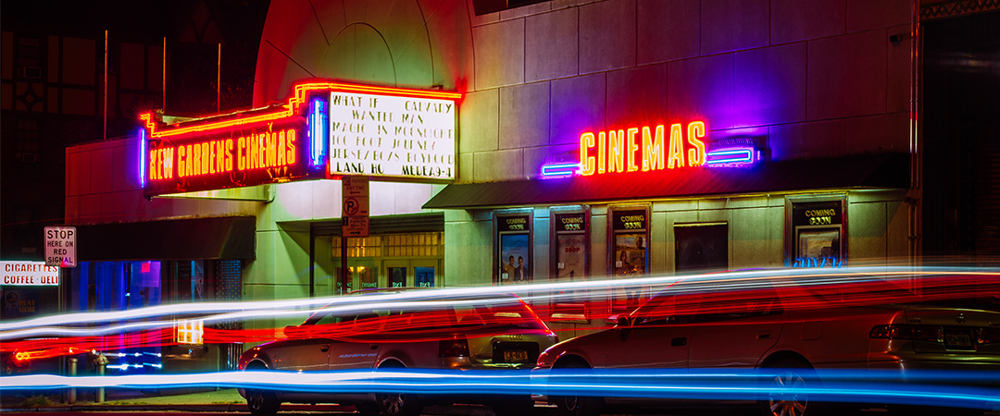

Kino al festival del cinema indipendente di Pittsburgh
Il primo film girato con Kino ad essere candidato ad un festival è "Il Colore dell'Acqua" di C.Crisantemo. "Kino è stata una sicurezza in questi mesi" ha dichiarato il regista siciliano. Diplomatosi al DAMS solo due anni fa... Leggi
tutto

Nasce KinOtto, l'evento per gli appassionati del super8
La seconda venuta della pellicola: dopo il vinile anche la celluloide sembra voler essere resuscitata dai millenial che si affacciano al mondo del cinema. Ne parliamo in questa intervista con Alan Cocchieri, esperto di... Leggi
tutto
Decreto Sostegni Bis: Quali novità per il mondo del cinema?
Molti sono i lavoratori del cinema che aprono una partita Iva, cosa cambia con il nuovo decreto? Il governo sta lavorando ad una proroga del saldo e della prima rata di acconto dei versamenti fiscali per professionisti e... Leggi
tutto
Allievi e Maestri: una storia di maestri sul grande schermo
Come si ritrae la grandezza di un personaggio? Da Gandalf a Pai Mei, dal Professore Charles Xavier a Mary Poppins, i mentori sono un archetipo del mondo del cinema a volte difficile da caratterizzare in maniera adeguata... Leggi
tutto
Da Kino a Kubrick: 10 consigli per fare carriera nel mondo del cinema
Si dice che il cinema sia fatto più di conoscenti che di conoscenze, un male necessario o il frutto di un sistema fin troppo chiuso? Ne abbiamo discusso con Alan Federighi, da anni... Leggi
tutto